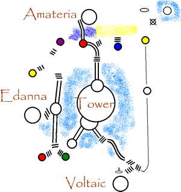
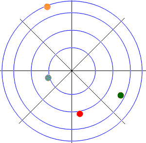
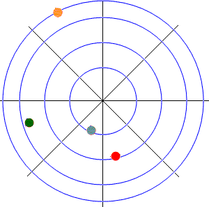
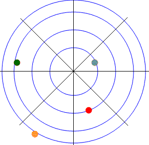
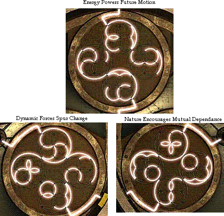
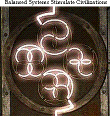

Myst III: Exile — Walkthrough
I. Walkthrough
A. "Tomahna"
Just listen to Catherine chatter about Atrus then head forward into the study.
You can browse around Atrus' desk on the right. Read the letter there about "Nara padlocks". The linking book behind his desk is not functional.
On the other side of the room is the Releeshahn book in a glass sphere. Walk over to it, inspect it, and Atrus will walk into the room. He will hand you a journal of notes.
Meet Saavedro. He will chuck a Molotov cocktail-type sphere at Atrus and make off with the Releeshahn book. Follow him with the linking book he leaves behind.
B. "J'nanin"
When you first enter this age, you'll see Saavedro escaping around a corner. No use chasing him. He's locked himself in the tower in the middle of the island.
Survey Devices
Each device has a colored gem on top and three view portals. You can rotate them by clicking below the portal area. Connect the dots, lalalala!

From the red survey device at the start, go left down the ladder and continue "west" to the yellow survey device. Look to the left of it for another device. Rotate the handle on this new device until the opening shines light.
You want to connect the survey devices with the beam of light starting from the first yellow one. It connects around the island in a counter-clockwise direction: Yellow, blue, green, red, another yellow, purple, and another red.
This will bring the light to a device pointed at a door and emit a rainbow spectrum. This we'll call the Rainbow Door as it will be referenced later.
Spore Bridge
On the north side of the island, go down a spiraling walkway. Enter a stained-glass building. Use a lever on the wall to open the iron grating. Next room, push button on left to open door to Saavedro's room on the right. Ignore Saavedro's room for now. Continue forward and exit the other side of the stained-glass building.
Outside, go to the left. Touch the plant on the right. Push the top of the plant on the left and a creature will emerge and feed off the plant to the right. Notice how the plant reacts when the creature chirps.
Go back to the path intersection and continue forward to a ladder. Halfway up, get off to the left. "Tune" the huge plant here in the direction of the little creature until you can hear it the loudest. This will make the spores on the wall here swell up.
Continue up the ladder to find the bridge the spores made.
Saavedro's Room
Go back to the stained-glass building. Enter Saavedro's room via the middle path inside. Get the journal on the hammock. Notice the drawings of gears at the end of the journal.
Walk behind the red elevator. Get inside and pull the lever on the right side. Take a ride up and get an earful from Saavedro. Press the green button to go back down. Get out of the elevator and pull the lever on the right side of it while standing outside. Crawl into the hole where the elevator was.
Move the four gears on each side into the positions shown in the journal. The first ahead: set the left weight all the way down. The middle and right weights halfway down.
Turn right. Set two of this gear's points with the coiled end pointing out, one pointing in. Rotate the gear by clicking in the upper middle area to access the other two ends.
Turn right. Move the lever so it is touching the gear teeth on the bottom.
Turn right. Rotate the left gear until the missing tooth is lined up with the gear on the right.
Climb out of the hole. Pull the lever to get the elevator back. Get into the elevator and pull the lever. If you've set the gears correctly, the elevator should turn 180 degrees before going up. This will let you open the door into Saavedro's inner lair.
Saavedro's Inner Lair
Go around and pick up the journal on the floor. This will add two pages at the beginning of Saavedro's journal you already have.
Push the blue button next to the imager. This will open the three portals around the room. Watch Saavedro rudely interrupt Atrus' speech and tease you about "finding the symbols".
Go to the first portal behind you. The object is to line up the image with its identical image somewhere on the island. The left lever zooms in and out. The right lever focuses. You can grab and drag the view in the middle.
Each symbol is on one of the giant tusks on the island in the dark windowed area. I'll refer to the symbols as the circle, bird, and rabbit (it's probably a plant but the Playboy Bunny profile came to mind first time I saw it).
When you line up the symbol correctly, note the dots around each portal. Their positions correspond to the dialing locks inside each tusk. I'll call the outer-most dot #1 and the inner-most dot #4 and reference their position as they would be on a compass.
| Symbol | Dot positions |
|---|---|
| Circle | #1-NNW, #2-ESE, #3-SSE, #4-W |
| Bird | #1-NNW, #2-WSW, #3-S, #4-SW |
| Rabbit | #1-SSW, #2-W, #3-S, #4-E |
Circle Tusk
The circle tusk is near the beginning of the Age at the first red survey device. Go past the tusk and down the ladder to the right. The object here is to use the two levers to tilt and roll the barrel back behind the ladder. Do:
LRLR
Open the door then
LLRR
Press the center button. Down comes the linking book for the Amateria Age.
Bird Tusk
The bird tusk is where you made the spore bridge. Again, follow the appropriate dot pattern given in the Saavedro's Inner Lair section. Press the center button. Down comes the linking book for the Edanna Age.

Rabbit Tusk
The rabbit tusk is at the Rainbow Door. Remember the sequence in which the light hits each survey device and each survey device's color.
Yellow, Blue, Green, Red, Yellow, Purple, Red.
Press the center button.

Down comes the linking book for the Voltaic Age.
C. "Voltaic"
Here you will find a vault door in a stone building and a metal sphere containing the linking book for J'nanin. From the start, turn around and follow the path into the island. Once inside the rocks, find a path to the right. Follow this to an intersection, picking up a few more pages of Saavedro's journal along the way. Ignore the door on the left. It can only be opened from the other side.
Turn right down the blue path. Halfway, picture on right wall showing symbols connected with dotted lines. Climb up ladder on left. Turn valve wheel to open dam. Climb back down.
Turn left, go to end of corridor. Another vault door. Go down ladder to the right. Press red button to open door. Walk through and crank handle. This jacks up the hydraulic arm. Climb up and go back to the ladder leading to the dam. One step towards airlock at end of corridor, look left. Click to extend turbine fins. Now notice two symbols are now lit up on the wall.
You can now go back down the corridor and open the airlock. Climb down the ladder inside, press the button on the imager to hear Saavedro talk about the horrors Atrus' sons put his people through. Turn around and go to the end of this long hall.
It opens into a large room with a huge cylinder in the middle. This is where power is directed throughout the island. But the power lines on the sides of it need to be reconnected properly. Go down the ladder and inspect the wall of the cylinder. Move the upper row twice to the right. Move the middle row once to the right. Move the bottom row five times to the right. Find some more journal pages on the other side of the cylinder.
Head back all the way outside to the long path where you started this age.
Follow the long path into the island. Ignore the elevator on the right and continue to the end of the path, go down the ladder. See huge airship on the left and huge gear on the right. Follow through the doorway.
Lever on floor, gauge, four wheels. Wheels turn right on, left off. Fourth wheel won't turn.
Behind the wall where the lever is, valve wheel that won't stay open.
Climb up ladder next to this wheel. Get more pages for Saavedro's journal. Click on the protruding sphere on the wall. It will rotate to reveal a new path. Go through and across a long, spine-like walkway.
At the end is another sphere. Click to open the hatch. Walk inside. Three steps forward there is a hatch in the floor. Click to open it. Climb down.
Ahead is the door that you could not open from the other side. Behind is a cylinder with a red lever on the bottom right. Grab and move this lever upwards to move a gear on far back wall. This will clear the lava from the room below you.
Climb down the ladder and press the button to open the door to the lava room. Inside, move the lever down once, then left, then down again. Go forward and press the button. Go back to the controls. Move the lever up, to the right, then up again. Exit the room and go back up the ladder. Move the lever down so that the lava rises again.
Head back up, across the spine-walkway, and down to the valve wheels near the airship.
- Bottom: Close all valves and go up.
- Middle: Close three valves and go up.
- Top: Close one valve and go down.
- Middle: Open one valve and go down.
- Bottom: Open three on the bottom.
Go to where the ladder on the left is, and turn the valve wheel there to fill the airship.
Now head back up the ladder and over to the elevator we ignored the first time. Head down and pull the lever at the end of the walkway. This will open the iris shutter and allow the airship through.
Hop inside the airship, make sure your seat is in the upright and locked position, your food tray is secured, and pull the lever on the dashboard. Thank you for flying Atrus Airlines.
At the end of the line, get off to the left, pull the lever at the end of the path. Get back into the airship, pull the lever on the dashboard again.
Get off to the right, open the vault door. Climb down, turn the valve on the floor. Receive the symbol of Voltaic. Open the green shutters to reveal the linking book for J'nanin. Head back and place the symbol on the imager.
D. "Amateria"
Go straight ahead from the start. You'll pass the J'nanin linking book on the right. Go all the way to the end, down a flight of stone steps. At an intersection, turn right and go up the red elevator. You'll find some journal pages behind you. Go back down, turn right and continue down the path.
You'll come to a radiant green pool. Enter the hut on the other side. Put two brown parts and one black part from the bench onto the sphere. Go back out to the set of controls. Pull the lever on the far left to raise yourself up. Slide the top lever so the gear on the hut moves to the far left. Pull the lever on the right. A ball will roll across the hut and continue out of sight. The control panel will close and you will see a vision of the rails near the start of the level. Note the pattern of hexagons on the control panel lid.
Pull the lever on the left to lower yourself down and head all the way back to the start.
Continue past the start point, through the giant crystals, until you come to another house. Halfway around the house, turn right into an opening between the stone columns. Go through the gate and grab the journal pages on the right.
Pull the left lever at the controls to raise yourself up. Put the markers in the slots marked by the X.
X 0
- X X 0
0 0 0 0
- -After the control panel closes, lower yourself back down and head back out to the house.
Turn right and continue around the house to a series of curving walkways with shimmering portals. Set each switch at the vibrating portals according to:
1
4 3
2 5
/\
||
ballGo to the control panel, and pick up the journal pages on the ground to the right. Raise yourself up. Pull the other lever to release a ball.
Pull the left lever to lower yourself back down. Go back to the ladder and down, head back to the start of the age.
To get to the end of this age, you need to input the hexagon patterns into the panels at the start of the age. They are as follows:
X O X
O O O O O X X O O X X O
X X X X O O O X O
X O O X X O X X X O O X
X X XOpen the hatch and enter the house. Go up the stairs, click on the chair, have a seat. Watch Saavedro rage on the imager. Pull the ejection handle above your head.
On this control panel, numbering the circles as follows:
1 2 3
4 5 6
7 8 9Try pressing each place a number of times:
0 1 1
0 2 0
1 1 1Press these in this order: 2, 3, 5, 5, 7, 8, 9. Turn around, press the blue button on the ceiling. Be the ball. Nananananana!
You get the symbol for Amateria, step down and use the J'nanin linking book. Place the symbol on the imager.
E. "Edanna"
Head down the path into the tree. Walk up the spiraled stem. Walk towards the opening in the tree with the view of the ocean. A bird will come flying in and land in its nest. Continue down the path to its end.
Press the button next to the palm fronds on the right. They will move to reveal the J'nanin linking book. This will also allow the sun to shine on the plant behind you. Go to this plant and aim it at the sphere to the right of the spiraled stem. It will explode and water the stem. Go back to the stem and walk down it.
Turn right and go down the angled path past the stingray creature. Down further, press the button on the plant to the right. This will suck the stingray down into the plant. Pick up some pages on the left and continue down the path.
At the bottom, turn right and cross the bridge. At the end of the path, pull the vine to make a bridge. Grab the blue vine on the bridge. Turn around and click to swing up onto the ledge with the white dome. Crank the dome up in the air, click the pink fruit bush to shake a piece free. Click the fruit when it's on the ground to roll it out from under the dome's landing area. Walk past the crank to slide back down. Go back to the dome trap. Pull the handle on the side of the ledge to drop the trap. It will miss the creature, making it run off.
During its escape, its noises will cause the spores in the first bridge to explode and collapse it. Grab the blue vine again and swing through the void where bridge once crossed.
Head down to the bottom of this path. You'll find the bird trapped in a plant on the left. Turn right and head outside. This will curve around to the left, back into the tree. Click the plant near the painting on the wall to bring the stingray down into it.
Follow path to the right from the painting. Go to the lily flower at the very end. Aim it at the far left lily flower. Go to this other flower and aim it at the leaf bridge on the left to extend it. Go back to the painting and follow the left path down this time.
Find another plant on the right near the bottom. Click it to bring the stingray down to here. Continue around this plant and across the leaf bridge. You'll find a sunflower plant aimed at the plant with the stingray. Go to the lily flower above and aim it at the sunflower.
Go all the way back to the first lily flower you aimed. Aim it at the lily flower just to the right of the currently targeted one. The plant holding the stingray will explode and free the bird. Re-target the far left lily before leaving here.
Head back up towards the sunflower (not lily) that just destroyed the plant. Two steps before reaching the ledge where the sunflower is, turn left and head into the darkness there. This was the hardest path to find in this age.
At the bottom, look for your hand icon to change to a vine icon when you pass it over the open sky area to your left. Click to drop down a level in the tree. Go down this new path to a large blue plant.
Follow this path to the end where a lily flower is. Aim it at the top of the blue plant. Go back down and turn right towards the plant with flies buzzing around it. Go to the right of this plant, click the plant at the end of the path to make it cover the sunshine. Go back around the opposite side of the plant all the way to its base. Click the pod on the ground.
Enter the blue vine behind you. Pick up the journal pages and continue to the end. Inside the plant, turn around and touch the blue stem in the middle. Take flight to the nest.
Click on the open space where you see the spiraled stem in the distance to slide down and obtain the symbol for this age. Go forward and return via the J'nanin linking book. Place the symbol on the imager.
F. "Narayan"
Welcome to Saavedro's home world. Notice the symbols on the walls to your right.
Go forward and right up the stairs. Meet Saavedro face to face. Flip the switch on the right after he leaves to turn on the power. Go back downstairs. Turn the handle between the two spheres so its facing the left one. Click on the left sphere to open it.
You need to create symbols by clicking on the individual lines in this puzzle. Atrus' journal has the following set of words in bold.
- energy powers future motion — put in top set of circles
- dynamic forces spur change — put in bottom right set
- nature encourages mutual dependance — put in bottom left set

These need to be created according to the symbols that represent each word on the walls. Create them starting with the first word in the top circle and continue in a clockwise direction. When you complete a set of four words correctly, they will all change white.
When all three sets are complete, go through the door where the forcefield disappeared. Go down the stairs and find the symbols for the following set of words.
balanced systems stimulate civilizations
Take the Tomahna linking book on the left, but don't use it. Upstairs, turn the handle between the two spheres so its facing the right one. Create the new set of symbols.

The outer forcefield disappears.
Saavedro will come downstairs and ponder the current situation. He goes outside and offers you Releeshahn in exchange for turning the handle between the spheres. Instead, go upstairs and turn off the power. Back downstairs, talk to Saavedro through the gate and he will give you Releeshahn.
Turn the handle between the spheres and restore the power upstairs. Saavedro rides off into the sunset. Now use the Tomahna linking book to return to Atrus and Catherine. Game Over.
Alternate Bad Endings
If you want to see some of the alternate bad endings, just deviate from the last outlined paragraph by, for example, using the Tomahna linking book early or switching the forcefield handle before getting Releeshahn.